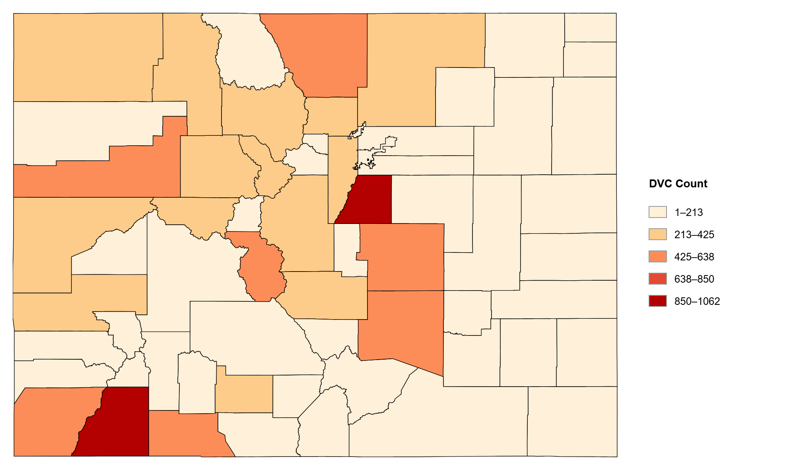
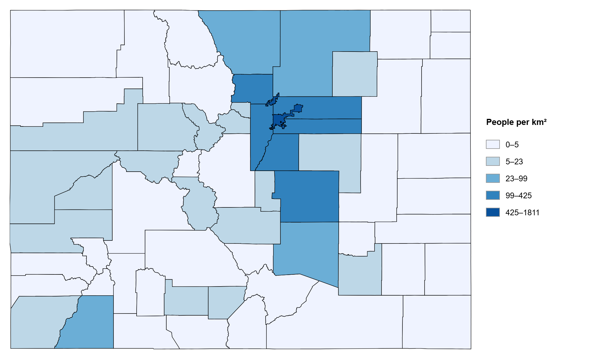

Project Overview
This project explores deer–vehicle collision patterns across Colorado using maps, statistical displays, and interactive visual analytics. The story moves from broad county patterns to localized hotspots and roadway-level explanations, showing how collision risk is shaped by both geography and transportation infrastructure.
Research Questions
- Where are deer–vehicle collisions concentrated across Colorado?
- Which counties show higher normalized collision risk?
- How does population relate to collision burden?
- Which road types and corridors contribute most to DVC occurrence?
Spatial Story
Total Deer–Vehicle Collisions by County

This map introduces the raw spatial distribution of reported DVCs across Colorado counties. It shows where collisions are most frequent before accounting for population differences. The pattern provides a baseline for asking whether high counts reflect true risk or simply greater exposure in more populated and connected areas.
Population Density by County

This map provides human-settlement context by showing where population is concentrated. Comparing this pattern with collision counts helps separate population exposure from places where DVC risk may be unusually high relative to human density.
Deer–Vehicle Collision Hotspots

The KDE hotspot map reveals localized collision intensity and highlights corridor-based DVC clustering across Colorado. Unlike county summaries, this view shows that collision risk is spatially concentrated along specific transportation corridors rather than evenly distributed across the state.
Interactive Visual Analytics
Normalized DVC Risk Map
This map shows DVCs per 10,000 people, revealing relative risk beyond raw counts. It highlights counties where collision burden is high compared with population size, making it useful for identifying areas that may be overlooked in a raw-count map.
Population vs DVC Scatterplot
This chart explores whether population alone explains collision burden. While larger populations are generally associated with more collisions, several counties deviate from that pattern, suggesting that roadway structure, wildlife movement, and local geography also shape DVC risk.
Coordinated View: County Risk Map and Population–DVC Scatterplot
The linked map and scatterplot support interactive spatial-statistical exploration. By connecting a county’s map location with its position in the scatterplot, this view helps users identify outliers and compare spatial patterns with statistical relationships.
Bivariate Map
This map compares population density and normalized DVC risk together. It helps distinguish counties where high human density and high DVC risk overlap from counties where risk is high despite lower population density.
Road Type Analysis
This chart compares DVC burden across roadway categories. It shows whether collisions are concentrated on higher-order roads, such as state highways and interstates, or more evenly distributed across local and county roads.
Corridor Ranking
This chart identifies the transportation corridors with the highest DVC counts. Ranking corridors shifts the analysis from broad road categories to specific routes, showing which road systems contribute most strongly to statewide collision burden.
Speed and Collision Burden
The bubble scatterplot relates roadway speed environments to DVC burden by road type. It shows that speed alone does not explain collision frequency, but it adds important context for interpreting roadway risk and potential collision severity.
Key Findings
Limitations
This project uses reported collision records and does not include direct traffic volume, deer abundance, or detailed road-segment exposure. County-level summaries may also mask local variation, although KDE mapping helps reveal localized hotspot patterns. Therefore, the results are best interpreted as exploratory geovisual evidence of collision concentration, not as a full transportation exposure model.